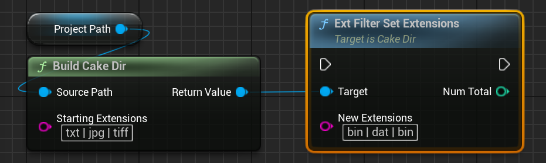

Cake Ext Filter
Overview
FCakeExtFilter is a an object that holds a collection of unique file extensions stored as FCakeFileExt objects. It is used by CakeDir objects to selectively visit files based upon their file extension during directory traversal operations.
Blueprint Interface Differences
Blueprint users will not interact directly with the FCakeExtFilter, but instead through an interface defined on UCakeDir objects. The Blueprint examples will provide more details in the following sections.
File Extension Filter Syntax
Functions that involve modifying the FCakeExtFilter's extension set use a special syntax to allow for easily specifying multiple extensions to operate on. The syntax is very simple: we simply must separate each file extension element via the | (pipe) character.
As an example, if we wanted to use the extensions .txt, .bin.dat, and .jpg in the same command, we could use the string "txt|bin.dat|jpg" for the extension command:
Note
It does not matter if we include the leading extension dot for an extension.

In the example above, the filter set will contain the following extensions: .jpg, .jpeg, and .png.
Tip
Adding surrounding whitespace to | extension separator can help boost legibility, especially in Blueprints. Any leading/trailing whitespace is always removed from each entry, so use whatever format is most legible for you and your team.
Info
The extension filter is extremely lenient when parsing file extension lists. It doesn't matter if we include the leader dot in an extension (".txt" and "txt" are equivalent, as are ".cdr.txt" and "cdr.txt"), It can also handle redundant | or . symbols and empty entries without incident (it will merely skip them). For example, |.|..cdr.|txt|bin|| will correctly parse the command into the following extension list [.cdr, .txt, .bin]. Therefore, you do not have to do exhaustive syntax checking when accepting filter commands from outside sources (like from a GUI).
Basic Usage
Building FCakeExtFilter Objects
Note
The following section only applies to native C++ Cake IO code.
Generally we don't build FCakeExtFilter objects directly, since directory objects handle that for us. However, we can easily build our own using the constructor, which takes a string-like object specifying the extensions that should be initially added to the filter set.
If we specify an empty string-like object for the constructor, the filter set will be empty. However, it would be better to just use the default constructor:
FCakeExtFilter EmptyFilter{ TEXTVIEW("") };
// Filter Set: []
FCakeExtFilter EmptyFilterDefault{};
// Filter Set: []
Accessing the Filter Set
We can gain read access to the filter set via GetExtSet, which returns a const TArray<FCakeFileExt>&:
FCakeExtFilter ExtFilter{TEXTVIEW("jpg|jpeg|png")};
UE_LOG(LogTemp, Warning, TEXT("--- Printing Ext Filter Elements ---"));
for (const FCakeFileExt& Ext : ExtFilter.GetExtSet())
{
UE_LOG(LogTemp, Warning, TEXT(" *[%s]"), **Ext);
}
FCakeExtFilter provides two convenience functions, IsEmpty and Num, which are equivalent to calling the same functions on the filter set via GetExtSet:
We can't gain direct access to the extension filter in Blueprint, but we can use ExtFilterCloneAllExtensions to get an array that holds a CakeFileExt object for every file extension currently in the extension filter.
Warning
This array will be empty if the extension filter is empty. Furthermore, keep in mind that this array is not the actual extension filter -- changes made to the returned array will not affect the CakeDir's extension filter. If you need to modify the extension filter itself, see the next section regarding modification functions.
Modifying the Filter Set
Adding Extensions
To add extensions to the filter set, we use AddExtensions, submitting a string-like object using ext filter syntax specifying the extensions we wish to add:
FCakeExtFilter ExtFilter{};
// Filter Set: []
ExtFilter.AddExtensions(TEXTVIEW("txt|jpg"));
// Filter Set: [".txt", ".jpg"]
AddExtensions returns a discardable int32 value we can capture, which indicates the number of extensions that were actually added. This number can differ from the number of extensions submitted since the filter only stores unique entries:
FCakeExtFilter ExtFilter{};
ExtFilter.AddExtensions(TEXTVIEW("txt|jpg"));
// Filter Set: [".txt", ".jpg"]
const int32 NumAdded{
ExtFilter.AddExtensions(TEXTVIEW("png|jpg|tiff")) }; // => 2, since jpg already exists
// Filter Set: [".txt", ".jpg", ".png", ".tiff"]
Note
Since most times we probably won't care about the exact number actually added, we are free to discard the return value.
To add extensions to the filter set, we use ExtFilterAddExtensions, submitting a string that uses extension filter syntax specifying the extensions we wish to add:
This sends back an integer representing the number of extensions actually added. Since the extension filter only keeps unique entries, sometimes this number might be different from the number of extensions submitted. In the example above, the number of extensions added will be 2 instead of 3 since .jpg already was already in the set. In situations where we don't care about the exact number of extensions added, we are free to ignore the returned value.
Removing Extensions
To remove existing extensions from the filter set, we use RemoveExtensions. Just like AddExtensions, this returns a discardable int32 value that indicates how many extensions were actually removed from the set.
To remove extensions to the filter set, we use ExtFilterRemoveExtensions, submitting a string that uses extension filter syntax specifying the extensions we wish to add:
This sends back an integer representing the number of extensions actually removed. This number can differ from the number of extensions submitted if any of the submitted extensions weren't in the set. In our example, the number returned will be 2, since .exe was never in the filter set. After the removal, only .jpg will remain in the filter set. As always, we are free to ignore this return value in the situations where we don't care about the exact number removed.
Setting the Extension Set
To remove all previous elements and add new extensions to the set in one step, we use SetExtensions:
To clear all previous elements and add a new group of extensions to the filter set, we use ExtFilterSetExtensions:

This sends back an integer that represents the total number of extensions in the set. Since the extension filter only keeps unique elements, this can differ from the extensions submitted. In our example, the number will be 2 instead of 3 since we submitted a duplicate bin extension. As with the other filter functions, we are always free to ignore the number returned from this function.
Clearing the Filter Set
To remove all extensions from the filter set, we can use Reset:
Note
Reset takes an optional int32 parameter that indicates the size the internal filter set buffer should reserve. It behaves identically to Unreal's container Reset interface.
To remove all extensions from the filter set, we use ExtFilterReset:
We can supply an optional integer value indicating the minimum amount of file extensions that the filter should hold (e.g., if we knew we were about to store 5 new extensions, we could submit 5). You can leave this at 0 for any situation where you don't need to reserve a size.
Advanced Usage
Using the Filter Set
To check if an FCakeFileExt object is in the filter set, we use Contains:
FCakeExtFilter ExtFilter{TEXTVIEW("jpg|jpeg|png")};
FCakeFileExt ExtJpeg{ TEXTVIEW("jpeg") };
const bool bContainsJpeg{ ExtFilter.Contains(ExtJpeg) };
Note
PathExtMatches_Relaxed / PathExtMatches_Exact are functions that are used by FCakeDir objects during filtered directory traversal operations. If you are curious about their usage, please look at the implementation source code for filtered traversal in CakeDir.h.
We can check if a CakeDir's filter set contains a specific file extension via ExtFilterContains, which takes a [CakeFileExt] object that holds the file extension we wish to check for:
ExtFilterContains will return true if the submitted file extension is in the extension filter, false otherwise.
FCakeExtFilter Equality
Note
The following section only applies to native C++ Cake IO code.
Two extension filters are equal if they contain the same unique group of file extensions. Order is not considered equality comparisons. We can use operator== and operator!= to check for equality: